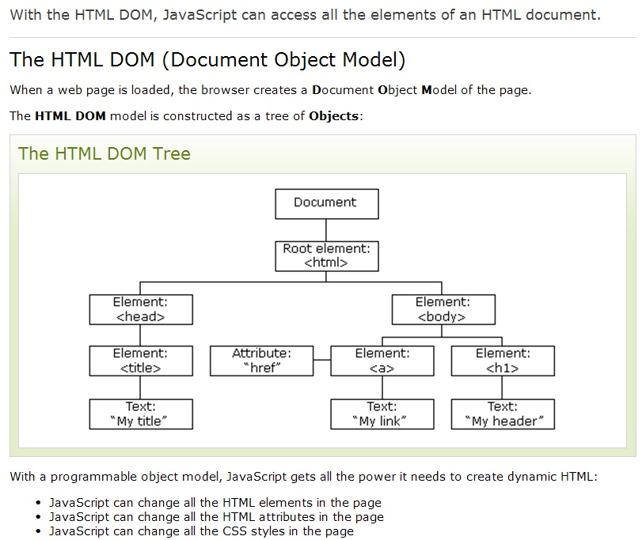

내장객체의 종류
자바스크립트에서 내장객체는 미리 정해진 규칙에 따라 사용하도록 만들어진 객체이다.
- 내장객체의 종류
- 문서객체 - document
- 브라우저객체 - window
- 날짜객체 - date
- 수학객체 - math
- 배열객체 = array
- 문자열객체 = string
- 함수객체 - function
- 기타............
문서객체모델(DOM - Document Object Model) p:240
DOM이란? 넓은 의미로는 웹브라우저가 HTML태그를 인식하는 방법이고, 좁은 의미로는 웹문서 안에 있는 요소(객체)들의 집합이다.
웹브라우저(크롬, 사파리, 파이어폭스, 오페라, 익스플러로(bye), edge, 모바일 브라우저)마다 DOM구현이 호환되지 않아서 W3C에서 DOM에 대한 표준규칙을 작성하였다.
DOM TREE 구조의 이해
DOM은 노트(node)==tag들의 집합이라고 할 수 있으며, DOM의 노드에드 요소노트, 속성노드, 텍스트 노드로 구성되어 있다. 노드는 DOM의 구조를 이루는 최소단위이며, 이 노드들의 집합체가 DOM 이라고 할 수 있다.



document객체의 속성들
- domain - 현재 문서가 있는 서버의 도메인 이름
- title - 현재 문서의 제목
- bgColor - 문서의 배경색
- fgColor - 문서의 글자색
- linkColor - 문서의 링크 글자색
- alinkColor - 링크를 클릭하였을 때 글자색
- vlinkColor - 방문했던 링크의 글자색
- anchors - 문서의 anchor들의 배열
- cookie - 쿠키에 대한 정보
- url - 문서의 url 주소
document객체의 메소드 종류들
- open(); - 데이터를 보낼 준비
- close(); - 문서에 데이터 출력을 마무리함.
- clear(); - 브라우저에서 문서를 지움
- write(); - 문서의 내용을 출력함
- writeln(); = 문서에 줄(line) 바꾸기를 포함하여 데이터를 출력함
실습1. 현재 작성하고 있는 문서의 title 정보와 url 주소 알아보기
실습2. 버튼을 클릭하면 문서 안에 글자색상과 배경색 변경하기
실습3. '다크모드' 버튼을 만들고 클릭 시 배경 어둡게, 흰색글자, 다시 클릭하면 원상태